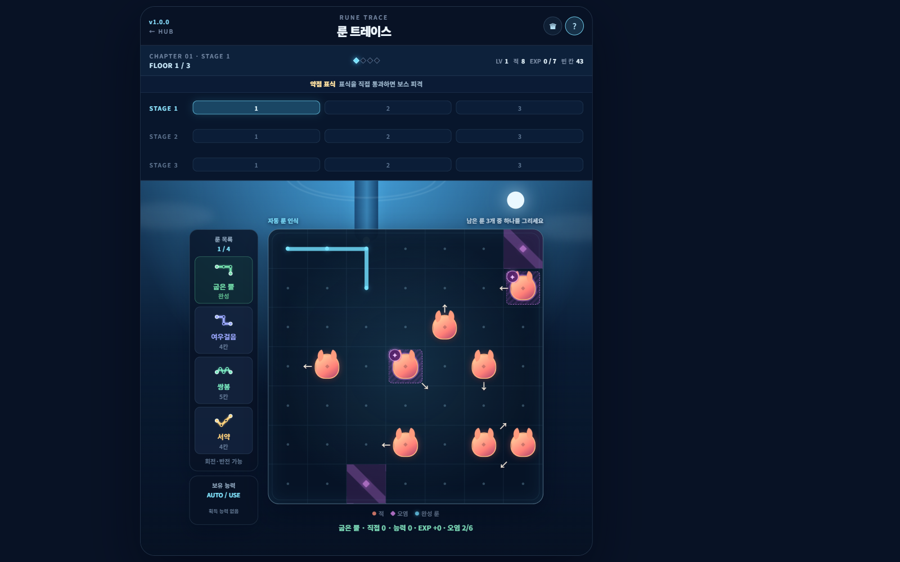
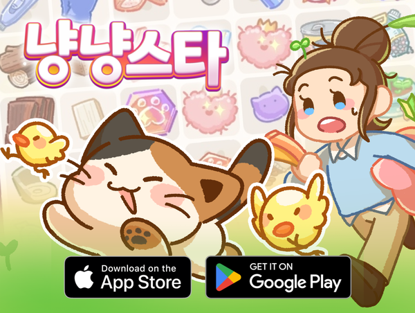
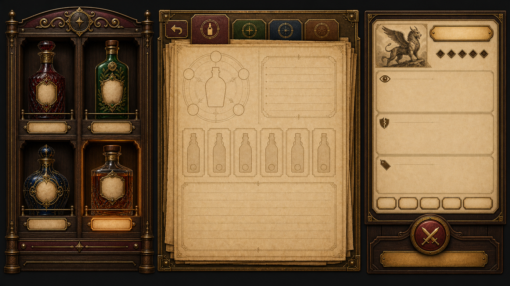
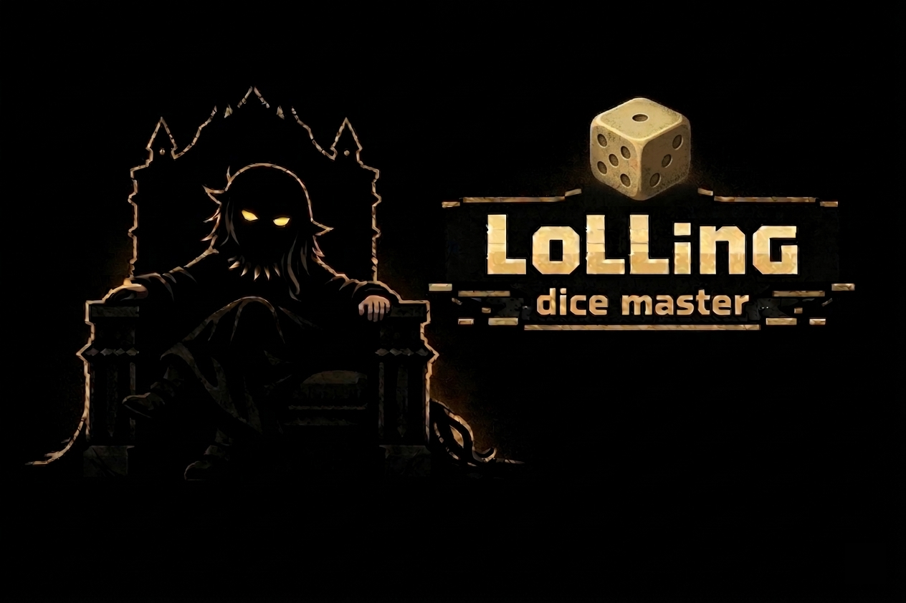
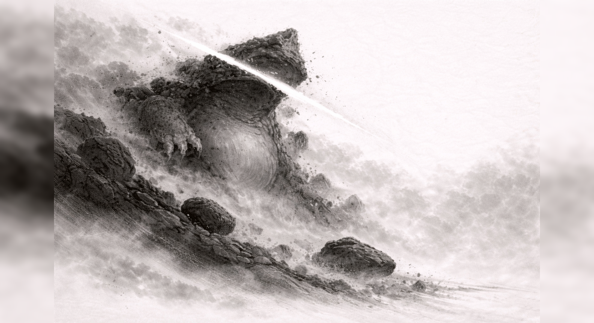
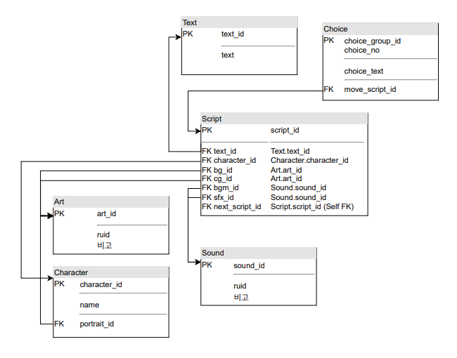

01 / 목표와 범위
팀이 완성할 수 있는 범위를 함께 정합니다.
나린가락에서는 팀이 원하는 힐링 감성과 제작 일정에 맞춰 시나리오를 줄였습니다. Project UT에서는 팀의 피드백과 공수를 반영해 공간형 갤러리를 패널형 UI로 바꿨습니다.
범위를 조정한 과정 →
경로를 고민할 시간을 주기 위해 실시간 디펜스를 턴제 퍼즐로 바꿨습니다. 이후 웹 프로토타입의 플레이 로그에서 입력에 어려움이 생기는 구간을 확인했습니다.
사례 보기 →
유저마다 다른 피드를 만들 수 있도록 이미지 공유 기능을 제안했습니다. 제작 여건에 맞춰 공유할 이미지를 획득한 CG로 좁히고, 코멘트 조작은 프로토타입으로 전달했습니다.
사례 보기 →
바의 설정을 덱 정비 기능과 연결하고, 외부 진입 연출과 시나리오 설정이 충돌할 가능성을 팀과 확인했습니다. 협의한 연출 기준을 화면 전환에 반영하고 입력 우선순위와 예외를 명세했습니다.
사례 보기 →
무작위 맵의 생성과 배치, 방 진행 규칙을 나눠 전달했습니다. Unity에서 실제 공간을 확인하고 입구 세이프 존을 적용했습니다.
사례 보기 →
팀이 목표한 힐링 감성과 제작 일정에 맞춰 시나리오를 줄였습니다. 일정과 역할을 조정하며 5개 스테이지의 게임으로 완성했습니다.
사례 보기 →
시나리오를 데이터 테이블과 관계도로 정리하고 기능에 연결했습니다. 엔진 적용 중 겪은 문제를 이후 구조 개선 구상에 반영했습니다.
사례 보기 →프로젝트에서 기획을 다듬은 방식
아이디어를 전달할 때는 기대하는 경험과 이를 위한 규칙을 함께 설명합니다. 실제로 만들 때 해석이 달라질 수 있는 부분은 입력 조건과 예외로 구분하고, 글만으로 전달하기 어려운 조작은 프로토타입으로 보여줍니다. 구현 결과를 확인한 뒤에는 의도와 다른 부분을 정리해 다음 수정과 테스트로 이어갑니다.
다른 프로젝트 기록
Project UT에서는 바의 공간적 분위기를 덱을 확인·선택하는 정비 기능과 연결했습니다. 바 외부 진입 연출과 등장인물의 위치 설정, 1인칭 시점 간 충돌 가능성을 발견했을 때는 시나리오팀과 협의하고, 문 클릭 → 도어벨 → Fade Out → 내부 진입으로 연출 조건을 정리했습니다.
설정 충돌을 확인하고 조율한 사례 →Rune Trace에서 무효 입력이 반복됐지만, 실패한 결과만으로는 원인을 구분하기 어려웠습니다. 그래서 입력 유형과 플로어, 재시도 구간별로 기록을 나눠 살폈습니다. 현재 기록으로 원인을 확정하지 않고, 다음 테스트에서 튜토리얼 적용 전후를 비교할 항목을 정리했습니다.
냥냥스타의 코멘트 블록은 글만으로 조작을 설명하기 어려워 프로토타입으로 보여주고, 구현 결과와 차이가 나는 동작은 QA 자료로 추적했습니다. Project UT에서는 화면 시안에 더해 상태가 바뀌는 조건과 입력이 겹쳤을 때의 처리 기준을 정리했습니다.
냥냥스타에서는 제작 여건에 맞춰 이미지의 종류를 제한하되, 유저가 편집한 이미지를 공유하는 구조는 남겼습니다. Project UT에서는 제작 부담과 반복 감상의 불편을 고려해 공간형 갤러리를 패널형으로 바꾸고, 처음 구상한 분위기는 프레임과 캡션에 반영했습니다.
01 / 목표와 범위
나린가락에서는 팀이 원하는 힐링 감성과 제작 일정에 맞춰 시나리오를 줄였습니다. Project UT에서는 팀의 피드백과 공수를 반영해 공간형 갤러리를 패널형 UI로 바꿨습니다.
범위를 조정한 과정 →02 / 구현 기준
냥냥스타의 코멘트 블록은 HTML 프로토타입으로 조작을 전달했습니다. Project UT에서는 화면 전환과 입력 우선순위, 예외 조건을 명세하고 Figma와 Unity에서 상태를 확인했습니다.
프로토타입 전달 사례 →03 / 진행과 피드백
Project UT에서는 바 외부 진입 연출이 인물 위치·시점 설정과 충돌할 수 있어 시나리오팀에 확인한 뒤 전환 기준을 정했습니다. 나린가락에서는 역할별 진행 상황을 공유했고, 냥냥스타에서는 드래그 오류를 QA 이슈로 추적했습니다.
QA와 기록에 사용한 도구 →프로젝트에서 내린 판단이나 작업 과정에 관해 궁금한 점이 있다면 이메일로 연락해 주세요.